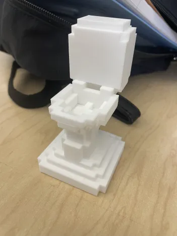

This is a form of toilet that we most commonly find in our society. However, toilets have experienced hundreds of years to develop into this shape, this history caused various types of toilets to still be used in many cultures. When in the recent decade, along with the modernization of the world, the old school toilets from different cultures are slowly disappearing, and being replaced by this type of toilet. I will consider this as a culturally significant representation of a stage of social development that we, as creatures, have achieved.
